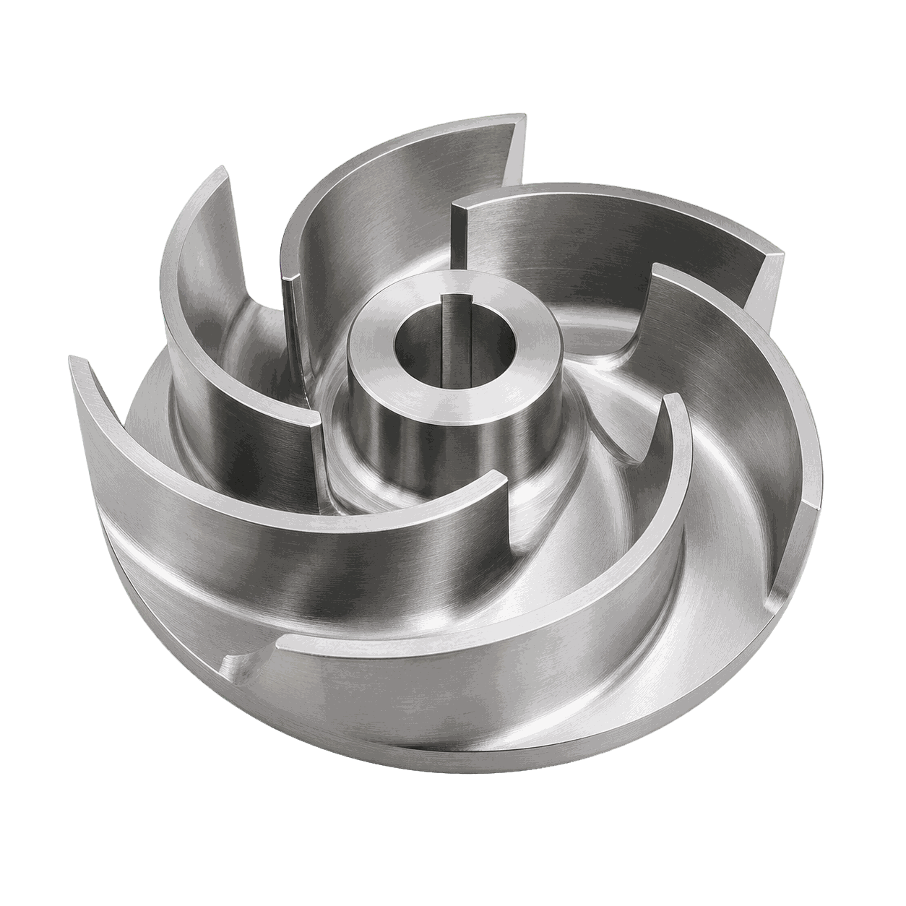
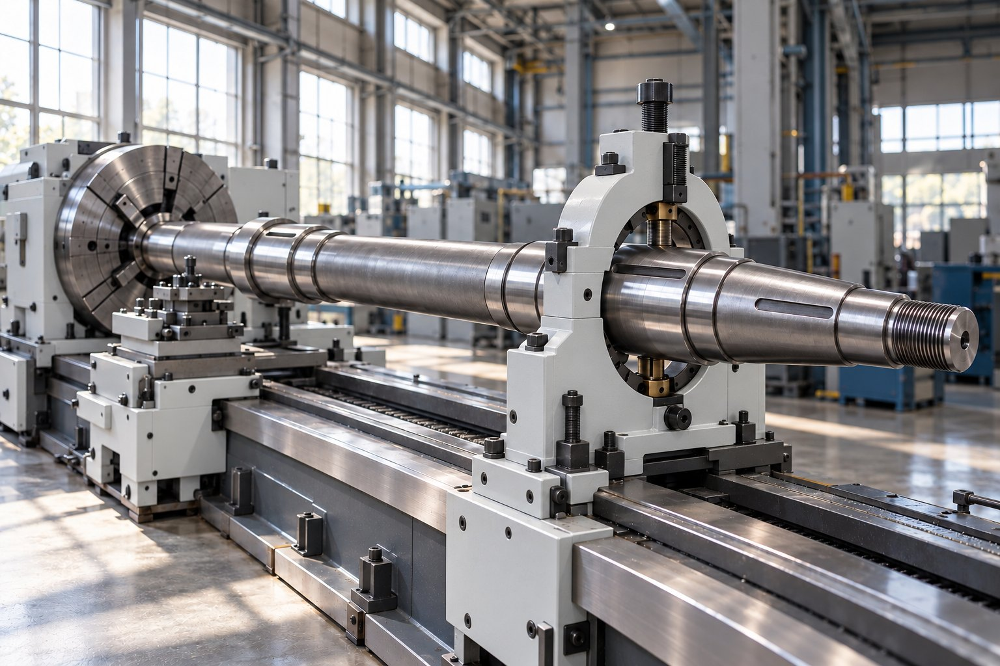
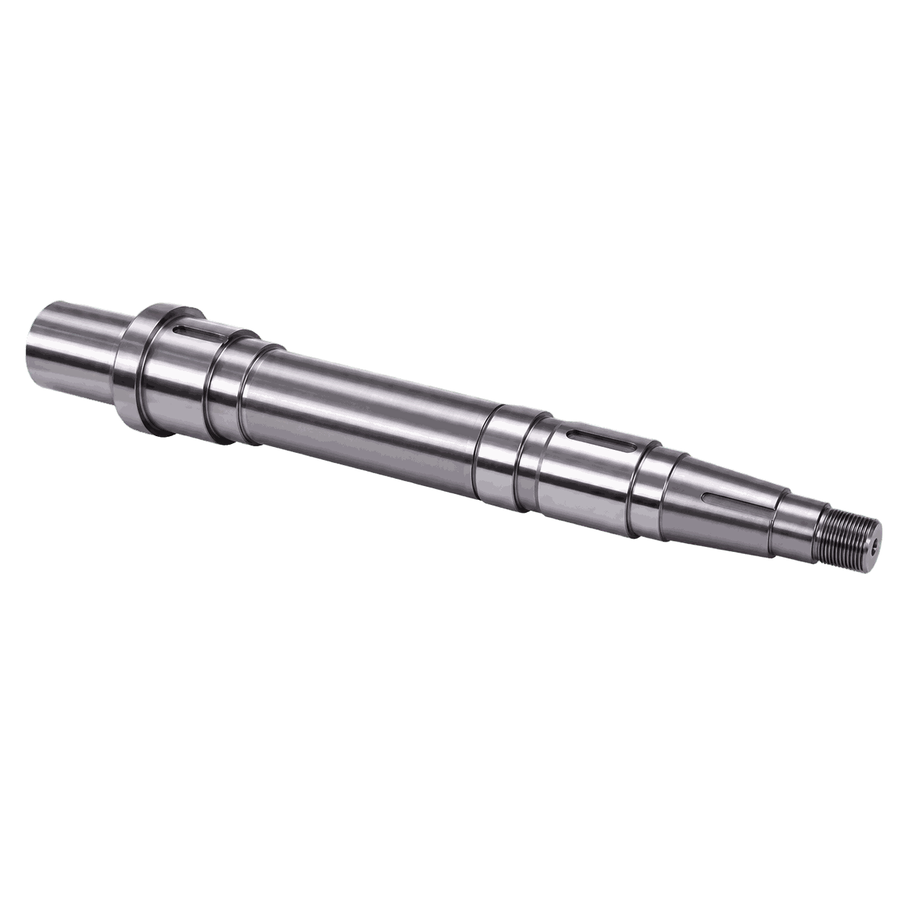
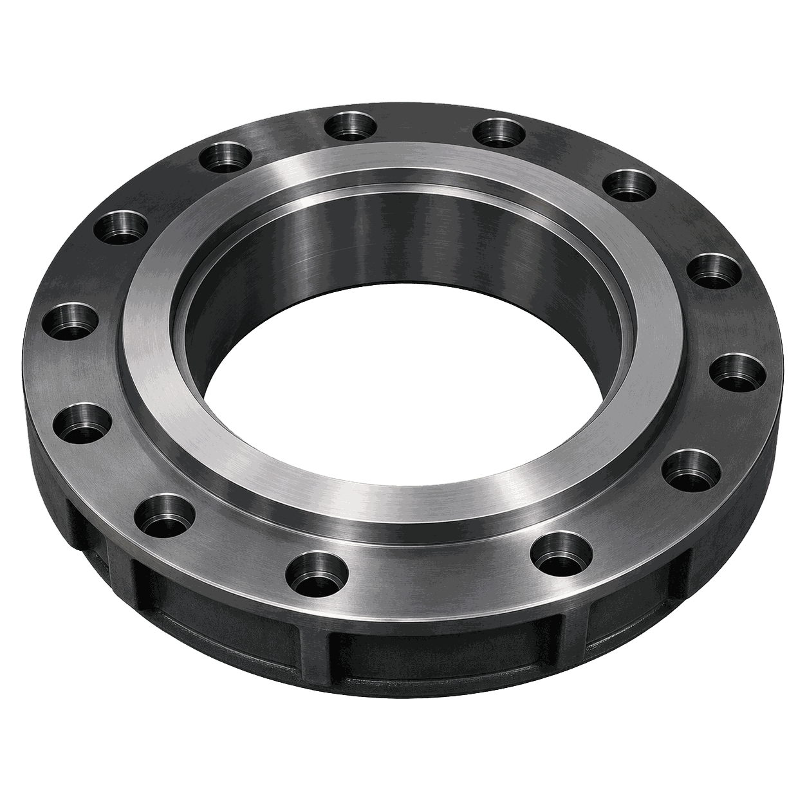
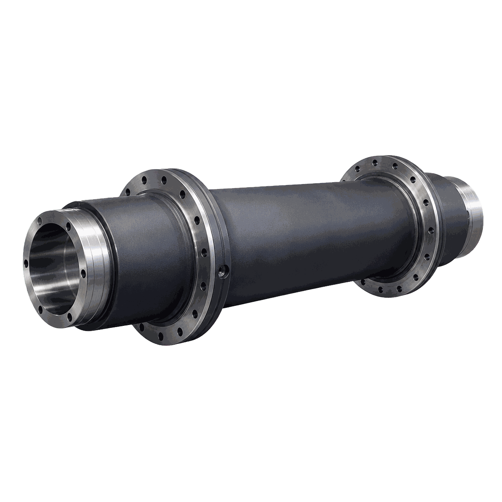
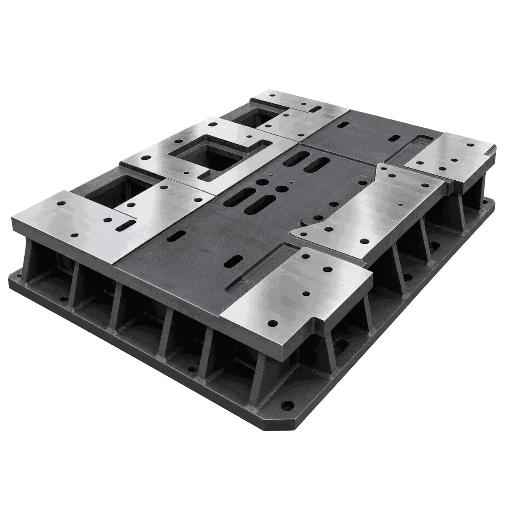
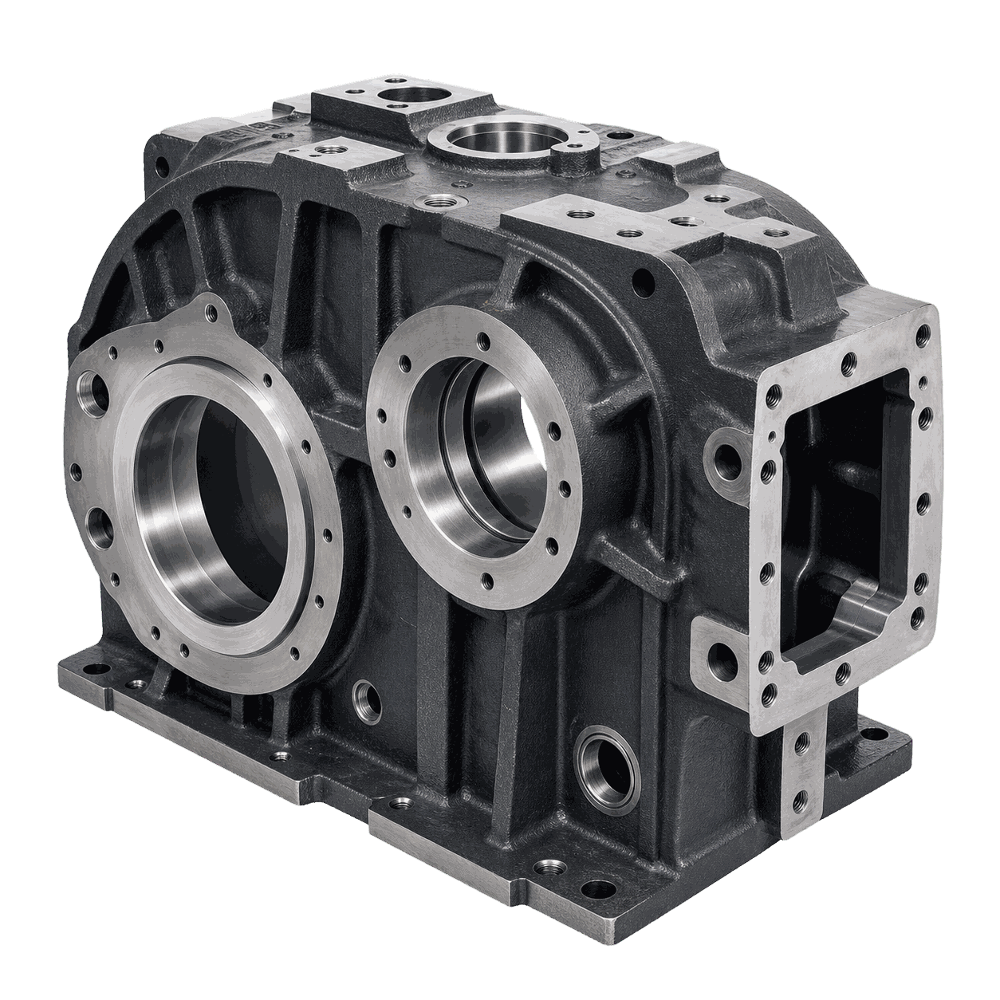

Крыльчатка насоса
Технологическая задача
Обработать сложный профиль детали «Крыльчатка насоса» с выдерживанием формы лопаток, посадок и балансировочных баз.

Маршруты обработки для крупногабаритных валов, фланцев, плит и корпусных деталей судового оборудования с контролем соосности и посадок.

Обработать сложный профиль детали «Крыльчатка насоса» с выдерживанием формы лопаток, посадок и балансировочных баз.

Обеспечить соосность шеек, стабильную геометрию детали «Гребной вал» и чистоту рабочих поверхностей.

Обеспечить точность базовых плоскостей, посадочных отверстий и сопрягаемых поверхностей детали «Корпусный фланец».

Построить маршрут обработки детали «Дейдвудная труба» с понятным разделением операций и подбором оборудования под каждую операцию.

Сформировать базовые плоскости, контуры и отверстия детали «Фундаментная плита» без потери геометрии на крупной заготовке.

Обеспечить точность базовых плоскостей, посадочных отверстий и сопрягаемых поверхностей детали «Корпус редуктора».
Реальные запуски оборудования на производствах: что поставили, как вводили в эксплуатацию, что получил заказчик.
 Внедрения · 04.03.2026Ввод горизонтально-расточного станка в эксплуатацию: ключевые проверкиЧитать →
Внедрения · 04.03.2026Ввод горизонтально-расточного станка в эксплуатацию: ключевые проверкиЧитать → Внедрения · 12.05.2026Запуск круглошлифовального станка: от базовой настройки до контроляЧитать →
Внедрения · 12.05.2026Запуск круглошлифовального станка: от базовой настройки до контроляЧитать → Внедрения · 08.07.2026Токарная обработка крупногабаритных деталей железнодорожного транспорта в ЯрославлеЧитать →
Внедрения · 08.07.2026Токарная обработка крупногабаритных деталей железнодорожного транспорта в ЯрославлеЧитать →Как проходит проект от чертежа до серии — шесть шагов. Нужен участок целиком — комплексное оснащение.
Судовое оборудование — это крупногабаритные детали с контролем соосности и посадок на длине в метры: гребные и промежуточные валы, дейдвудные трубы, корпусные фланцы, фундаментные плиты под механизмы, корпуса редукторов, крыльчатки и рабочие колёса насосов. Материалы — судостроительные и нержавеющие стали, бронзы, латуни. Судоремонт добавляет свою специфику: единичные детали по образцу, восстановление посадок на изношенных валах, срок — пока судно стоит у стенки.
Технолог Механита подбирает станок под номенклатуру верфи или судоремонтного завода: чертёж, материал, габарит и масса заготовки — на выходе типоразмер, оснастка и маршрут по операциям. Поставка по всей России, пусконаладка на площадке заказчика, инструктаж операторов, гарантия от 12 месяцев, выезд инженера за 1–2 рабочих дня — условия сервиса.
Пришлите чертёж и требования — технолог Механита разберёт задачу, составит маршрут обработки и подберёт станок под вашу программу выпуска.
Предварительный анализ — без оплаты.